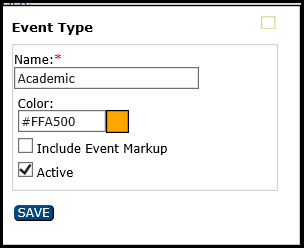
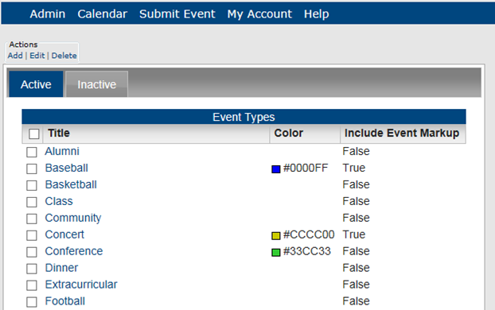
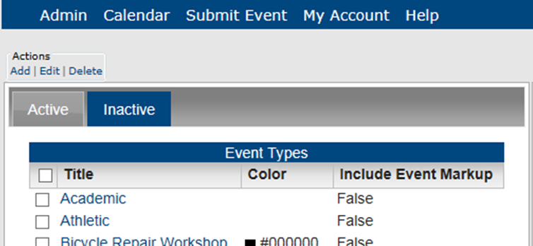

Configure Event Types
An event type is a colored label that you can apply to an event in Master Calendar to make it easier for your guests and users to distinguish between different events, know the purpose of an event, and find events. For example, if you are managing a calendar system for a university campus, your event types might include athletic events, invited speaker events, and so on. This topic guides you in defining new event types, editing event types, deleting event types, and activating and de-activating event types.
Create New Event Types
Rather than creating an event type from scratch, if you are an EMS customer, then you can import your EMS event types directly into Master Calendar. See Also: Importing Data Sources from EMS.
-
From the Admin Panel, navigate to Admin > Configuration > Event Types. The Event Types page opens on the Active tab, which lists all active event types in Master Calendar. The Inactive tab lists event types defined for your system but not in use.

-
Under Actions, click Add. The Event Type dialog box will appear. You can name the event type, define the label color, and make the event type visible to search engines.

- In the Name field, enter the name for the event type.
- Optionally, in the Color field, select a color for the event type.
- Click Add. The Event Type is added to Master Calendar as an active event type.
- Click the Include Event Markup box to make the event type visible to the search engine.
Edit Existing Event Types
-
Navigate to Admin > Configuration > Event Types. The Event Types page opens on the Active tab, which lists all active event types in Master Calendar.

-
Select the Active or Inactive tab to work with event types.

-
To edit, activate or deactivate an Event Type, select the event type that you want to work with.
-
To delete an event type, select the item from the list on the Active or Inactive tab. To select all event types on the currently opened page for deletion in a single step, select Title. If you have multiple pages of event types to delete, you must repeat this entire process on each page.
You can delete one or more active or an inactive event types. If you delete an active event type, the event label is deleted for all past and current events; however, the URL remains associated with the events. Going forward, the event type in its entirety—label and URL—is not available for use.
- Under Actions, click Delete. A message prompts you to confirm that you are sure that you want to delete all the selected event types.
- Click OK. A message confirms the deletion.
- Click OK in the message.